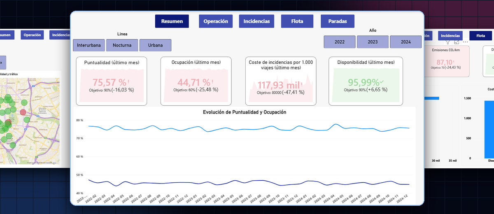

Luisa Fernanda Rincón Durán
Business Intelligence Engineer
Backend Developer (Java • Spring Boot)
Data Analytics & AI Solutions
Profesional con más de cinco años de experiencia en Business Intelligence y Analítica de Datos, complementada con experiencia en desarrollo de software empresarial utilizando Java 21, Spring Boot, Angular y arquitecturas de microservicios.
Sobre Mí: Sinergia Negocio + Tech + Data
Mi propuesta de valor radica en conectar la visión financiera y estratégica empresarial con la solidez técnica del desarrollo de software y la precisión de la analítica de datos.
Visión de Negocio
Formación en Administración de Empresas enfocada en ROI, eficiencia de procesos, traducción de requerimientos comerciales y alineación estratégica con stakeholders.
Desarrollo Backend, Frontend & Mobile
Microservicios con Java 21 y Spring Boot, apps móviles nativas con Kotlin & Jetpack Compose, interfaces reactivas con Angular/TypeScript y testing avanzado (JUnit 5, Testcontainers).
Business Intelligence & Data
Modelado predictivo (Python, SQL), procesos ETL, dashboards ejecutivos en Power BI y análisis de comportamiento para decisiones basadas en datos reales.
"Especializada en integrar herramientas de Inteligencia Artificial Generativa en IDEs y flujos de trabajo para acelerar la entrega de valor con alta calidad."
Experiencia Profesional (5+ Años)
Software Developer Intern – Consultoría Tecnológica
SNGULAR | Mar 2026 – May 2026Madrid, España (Remoto)
- Backend en Microservicios: APIs REST robustas con Java 21, Spring Boot, MapStruct y persistencia en PostgreSQL / Oracle.
- Frontend Reactivo: Componentes dinámicos e integrados en Angular con TypeScript.
- Testing & Calidad: Suites unitarias (JUnit 5, Mockito), PoC con Testcontainers e implementación de Mutation Testing.
- Spikes & IA: Integración local de Google Cloud Pub/Sub y evaluación de IA en IDEs para aceleración del desarrollo.
Analista de Datos / BI Analyst
Nutrabiotics | Ene 2022 – Ene 2024Bogotá, Colombia
- Automatización BI: Migración de reportes manuales a Power BI, reduciendo en un 40% el tiempo de generación de informes.
- Forecasting de Ventas: Modelos predictivos y monitoreo en tiempo real por región y canal.
Analista de Datos & Marketing
Celagem | Ene 2021 – Ene 2022Bogotá, Colombia
- Optimización ROI: Modelos de atribución digital logrando un aumento del 25% en tasa de conversión anual.
- Analítica Web: Auditorías con Google Analytics presentadas directamente a la Junta Directiva.
Analista de Datos & Procesos
Promotick | Abr 2018 – Ene 2021Bogotá, Colombia
- Integridad de Datos: Reportes de KPIs en Excel/SQL incrementando la calidad de datos a más del 85%.
- Ahorro Operativo: Detección de ineficiencias transaccionales generando un ahorro anual del 10%.
SNGULAR Technologies
"Luisa ha demostrado ser una profesional íntegra, con una mente analítica brillante, un fuerte espíritu de superación y una madurez técnica encomiable. Su proactividad y frescura para proponer alternativas técnicas han aportado un valor real tangible a nuestros proyectos."
Carlos Cenjor Ramírez
Responsable de Proyecto y Mentor en SNGULAR
Aptitudes Destacadas en Recomendación:
Stack Tecnológico & Competencias
Dominio de herramientas técnicas, lenguajes de programación y metodologías estructuradas por áreas de especialidad.
Backend Engineering
Frontend & Mobile
BI & Data Analytics
Testing & Calidad
DevOps & IA Tooling
Estrategia & Gestión
Proyectos Destacados
Proyectos representativos estructurados con Problema, Solución, Arquitectura y Resultado Tangible.
Madrilink
Problema: Centralización y gestión ineficiente de trámites urbanos y comunitarios.
Arquitectura: Spring Boot REST APIs + JPA + Angular Frontend + SQL.
Resultado: Pleno funcionamiento con ejecutable funcional y memoria técnica completa.

Farmacol – Mobile App
Problema: Compra de medicamentos offline/online sin persistencia ágil.
Arquitectura: Kotlin + Jetpack Compose UI + Room SQLite + ViewModel.
Resultado: App móvil fluida con login, carrito offline y confirmación de pedidos.

Prototipo FarmaLocal
Problema: Alta fricción en el proceso de checkout móvil de e-commerce farmacéutico.
Arquitectura: Design System interactivo en Figma + User Journey Mapping.
Resultado: Prototipo navegable listo para fase de maquetación y desarrollo.

MetroBus Analytics
Problema: Datos de operación de una red de autobuses (viajes, incidencias, mantenimiento) sin una vista única para decidir.
Arquitectura: EDA en Python + modelo relacional en PostgreSQL + esquema en estrella y dashboard de 5 páginas en Power BI.
Resultado: La puntualidad cae a ~58 % en horas punta (frente a ~87 %) y Seguridad concentra el 77 % del coste de incidencias.

Educación & Certificaciones
Formación Académica
Máster en Análisis de Datos (Big Data & Data Science)
Prometeo by thePower, Madrid, España | 2024 – 2026
Tecnólogo en Análisis y Desarrollo de Software
Prometeo by thePower, Madrid, España | 2024 – 2026
Pregrado en Administración de Empresas
Universidad Externado de Colombia, Bogotá | 2013 – 2018
Certificaciones & Idiomas
Idiomas
Inglés: Profesional B2 (Certificación TOEFL / Interacción técnica y de negocios fluida).